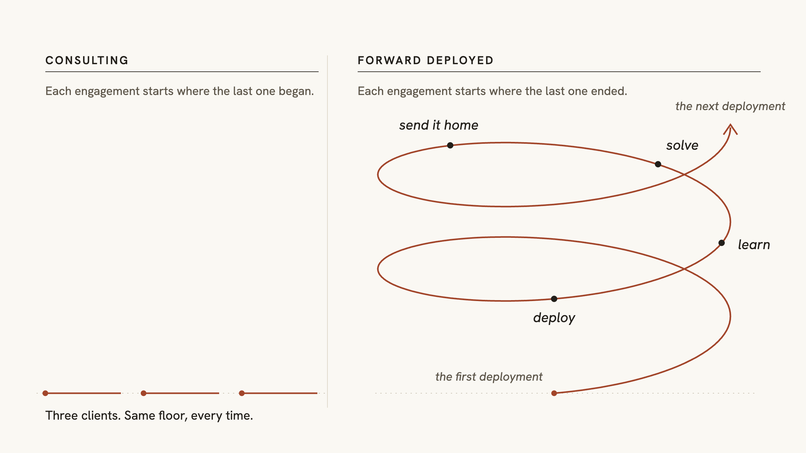
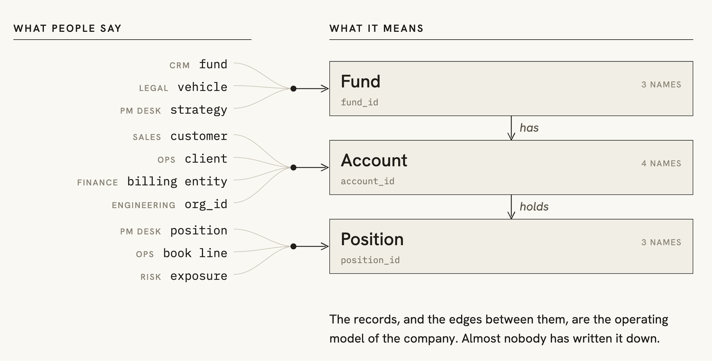

포워드 디플로이드 엔지니어의 부상과 제대로 일하는 방법
Kepler를 공동 창업하기 전, Vinoo Ganesh는 Palantir에서 Spark를 이끌고 포워드 디플로이드 엔지니어를 위한 선구적인 프로그램인 Project Frontline을 만들었다. 그가 FDE의 실무 원칙을 소개한다.

포워드 디플로이드 엔지니어(FDE)는 지금 AI 분야에서 가장 주목받는 직무다. AI 연구소와 스타트업, 사모펀드(PE) 운용사 모두 고객의 업무 현장에 들어가 문제를 해결할 엔지니어를 채용하고 있다. 하지만 이 엔지니어들이 무엇을 달성해야 하는지, 이들을 채용하는 근본적인 전략이 무엇인지에 대해서는 거의 아무도 의견이 일치하지 않는다.
나는 AI를 위한 결정론적 인프라를 만드는 Kepler의 CEO, Vinoo다. 10년이 넘는 기간 동안 서로 다른 세 조직에서 현장 배치 조직의 일부를 세 차례 구축했다. 그 과정에서 무엇이 효과가 있었고 무엇이 실패했는지, 그리고 이 역할이 앞으로 어디로 향할지 이야기해 보려 한다.
첫 번째는 Palantir였다. 나는 제품 개발팀에서 저장·검색 시스템을 만드는 일로 시작했고, 이후 FDE로 배치되어 민간 기업, 국방부(DoD)와 국가안보(NatSec), 의료, 석유·가스 분야에서 일했다. 소프트웨어 엔지니어를 현장 배치 엔지니어로 전환하는 순환 근무 프로그램인 Project Frontline도 이끌었다. 약 250명이 이 프로그램을 거쳤고, 그중 많은 사람이 지금 OpenAI, Anthropic, xAI, Anduril 같은 기업에서 현장 배치 팀을 이끌고 있다.
두 번째는 Citadel이었다. 그곳에서 나는 비즈니스 엔지니어링을 이끌었다. 우리의 고객은 포트폴리오 매니저였고, 중요한 질문은 단 하나였다. 우리가 만든 데이터와 소프트웨어 제품이 이들의 알파, 즉 초과수익 창출에 도움이 되었는가 하는 것이었다.
세 번째는 Kepler다. 이곳에서는 현장 배치 조직이 영업이 아니라 제품 조직에 속해 있으며, 그럴듯하지만 틀린 답이 아예 답을 내놓지 않는 것보다 나쁜 분야에서 일한다.
FDE를 둘러싼 오해
몇 달 전 a16z가 Forward Deployed Engineer Fellowship을 시작했고, 나도 예전에 함께 일했던 몇몇 사람과 함께 펠로로 지명되었다. 훌륭한 프로그램이고, 그곳에서 많은 대화를 즐겁게 나누었다. 지난주에는 샌프란시스코에서 열린 펠로 만찬에 처음 참석했다.
테이블에는 Snowflake와 Anthropic, 그리고 내가 글로 접해 온 여러 스타트업의 FDE들이 앉아 있었다. 대화가 이어질수록 우리가 똑같은 두 단어, 즉 "forward deployed"를 사용하면서도 서로 거의 공통점이 없는 직무를 설명하고 있다는 사실이 분명해졌다. 어떤 대화에서는 FDE가 "두 번째 고객 미팅"에 들어오는 세일즈 엔지니어였고, 다른 곳에서는 Python을 쓸 줄 알면서 매출 할당량을 책임지는 영업 담당자였다. 몇 자리 떨어진 곳에서는 노트북과 작업명세서를 들고, 제품이 제공하지 못하는 것을 납품하러 온 컨설턴트에 더 가까웠다.
며칠 뒤에는 누군가 우리 WhatsApp 그룹에서 진지하게 질문했다. 이미 같은 고객사에서 일하고 있는 컨설팅 회사와 자기 FDE 팀이 업무 범위를 어떻게 나눠야 하느냐는 것이었다. 충분히 할 법한 질문이지만, 적어도 내가 생각하는 FDE의 역할을 기준으로 보면 이런 질문에 답해야 한다는 상황 자체가 낯설었다.
분명히 해두자면, 누가 이 명칭을 써도 되는지 따지려는 생각은 없다. 용어의 의미는 변하며, 이 용어는 대부분의 다른 용어보다 더 빠르게 변하고 있다. 다만 흥미로운 점은 현재 FDE 전문가라고 할 수 있는 이 그룹의 사람들이 서로 다른 보고 체계와 인센티브를 가진, 근본적으로 다른 직무를 설명하고 있다는 것이다. FDE를 다룬 YouTube 영상마다 댓글의 절반쯤이 "이거 그냥 컨설팅을 다시 만드는 것 아닌가요?"라는 반응인 것도 놀랍지 않다.
이제부터 내가 한몫했던 실수 하나를 중심으로 Project Frontline의 이야기를 하려 한다. 그 실수가 어떻게 나를 FDE로 만들었고, 결국 소프트웨어 엔지니어를 FDE로 바꾸는 순환 근무 프로그램에 어떤 영향을 주었는지 이야기하겠다.
Project Frontline의 역사
먼저 배경을 조금 설명하겠다. Palantir는 거의 초기부터 두 기능으로 나뉘어 있었다. 첫 번째는 플랫폼을 만드는 제품 개발(Product Development, PD)이었다. 두 번째는 사업 개발(Business Development, BD)이었다. 이름과는 달리 BD에는 기술 담당자들, 당시에도 이미 FDE라고 불리던 사람들과 비개발 직군의 고객 담당자들이 함께 있었다. 후자는 Embedded Analyst 또는 Deployment Strategist라고 불렀다.
대부분의 경우 PD는 고객과 직접 접촉하지 않았고, BD는 범용 핵심 플랫폼을 만드는 일에 직접 참여하지 않았다. PD는 BD와 대화하거나, 현장에서 만든 기능 중 잘된 것을 핵심 제품에 흡수하는 방식으로 고객을 간접적으로 이해하곤 했다. 하지만 어느 것도 정해진 절차는 아니었다. 어떤 FDE가 어떤 PD 엔지니어와 친해서 필요할 때 도움을 요청할 수 있느냐 같은 인간관계에 기대어 돌아갔다. 그래서 현장에서 얻은 좋은 통찰이 플랫폼에 반영될지, 아니면 버려질지는 그 자리에 누가 있느냐에 달려 있었다.
Palantir에 입사한 지 얼마 되지 않았던 2013년, 나는 Phoenix라는 트랜잭션 저장소를 개발하게 되었다. 이 저장소는 내가 함께 일한 엔지니어 중에서도 손꼽히는 실력자들이 설계했다. 명확한 고객 사용 사례를 범위로 삼아 아주 깔끔하게 설계한 시스템이었다. 다만 그 사용 사례는 모두 다른 사람을 거쳐 전달받은 것이었다. 우리는 설계 요구사항을 알고 이해하고 있었다. 요구사항의 초점은 상업적 환경에서 필요한 데이터 보존 기간에 있었고, 일정 기간의 데이터를 계속 유지할 수 있도록 버킷에 나누어 저장하는 영리한 해법도 갖고 있었다. 우리가 통제하는 모든 환경에서는 명세대로 정확히 동작했다.
그런데 은행에 배포하자 실제 금융 데이터에는 테스트 데이터에 한 번도 없었던 빈틈이 있다는 사실이 드러났다. 비어 있는 타임스탬프가 기준 시각인 에포크(epoch)로 처리되면서, 보존 로직은 1970년 1월 1일부터 현재까지 모든 구간에 대해 10분 단위 버킷을 성실하게 요청했다. 그 결과 약 230만 개의 키스페이스가 생겼다. 기반 기술인 Cassandra가 파일 핸들 하나당 약 5MB를 필요로 하는 시스템에서 벌어진 일이었다. 서버는 당연히 메모리 부족(OOM, Out-of-Memory)으로 멈췄고, 다시 실행하려면 RAM 14TB가 필요했을 것이다. 사실상 배포하자마자 죽은 프로세스였다.
흔히 짐작하는 것과 달리, 근본 원인은 사용자 조사가 부족했다는 데 있지 않았다. 우리에게는 명세가 있었고, 사용 사례를 이해했으며, 이런 기관이 데이터를 어떻게 저장하는지도 충분히 읽고 공부했다. 우리가 한 번도 해보지 않은 일은 시스템이 고객의 운영 데이터로 돌아가는 동안 그 건물 안에 직접 서 있는 것이었다. 다시 말해 설계와 일상적인 현실 사이의 간극을 우리 쪽에서 책임지는 사람이 아무도 없었다. 우리가 그 은행에 대해 아는 모든 것은 다른 사람을 거쳐 전달받은 정보였다. 전달해 준 사람들은 선의로 도왔지만, 그들에게 품질이 나쁜 데이터는 그저 일상적인 일이었다.
그렇게 나는 FDE가 되었다. 사실 이렇게 말하면 실제로 벌어진 일을 꽤 그럴듯하게 표현한 셈이다. Phoenix가 Palantir의 민간 고객사 전반에 배포되면서, 나는 우리가 내보낸 제품을 고치러 현장에 날아다니게 되었다. 그제야 처음으로 실제 사용자들과 마주하게 되었다. 이 경우 사용자는 Palantir 내부의 FDE들이었다. 나에게는 운이 좋았다. 그들은 무엇이 잘못되었는지 내가 이해하는 언어로 설명해 줄 수 있었기 때문이다. 나는 그들이 하려는 일을 지원하기 위해 시스템을 만들고 확장하기 시작했다.
그러니 이 이야기는 내가 FDE의 사고방식을 머리로가 아니라 몸으로 배운 과정이기도 하다.
흔한 이야기라면 여기서 사용자에게 관심을 기울여야 한다는 교훈으로 끝났을 것이다. 하지만 Phoenix는 그보다 더 흥미로운 무언가가 되었다. 플랫폼이 된 것이다. Palantir의 FDE들은 그 위에서 사이버 보안, 고객확인(KYC), 자금세탁방지(AML)를 비롯해 누구도 미리 범위를 정해두지 않았던 다양한 롱테일 사용 사례를 구현하기 시작했다. 결국 우리 제품 개발팀은 이 모든 사용 사례를 지원하려면 Phoenix 플랫폼을 어떻게 확장해야 할지 고민해야 했다.
당시에는 알아보지 못했지만, 그 반복 과정이야말로 이 역할의 핵심이다. FDE는 고객의 문제를 해결하면서 다음에 무엇을 만들지 결정하는 데 필요한 통찰을 얻는다. 이 역할은 제품팀의 연장선에 있다.
오늘날의 FDE
하지만 현실에서 만나는 대다수 FDE는 이런 사고방식과 거리가 멀다. 이 용어는 "고객과 막연하게 관련된 무언가를 하는 사람"에 가까운 뜻으로 차용되었다. 그래서 포워드 디플로이드 주식 리서치 애널리스트나 포워드 디플로이드 세일즈 엔지니어 같은 채용 공고가 등장한다. 직함은 우스워 보일 수 있어도, 이런 명칭을 붙이게 된 직감 자체는 옳다. 고객이 5년 전보다 더 중요해졌고, 거기에는 구체적인 이유가 있기 때문이다.
쉽게 해결할 수 있는 문제는 이제 남아 있지 않다. 잘 설계한 제품 하나를 천 개의 회사에 똑같이 판매해서 해결할 수 있는 문제는 대부분 이미 해결되었다. 남은 것은 회사 내부의 일이다. 복잡하게 얽혀 있고 문서화되어 있지 않으며, 밖에서는 간접적으로 파악하기가 거의 불가능한 업무 흐름 속에 있는 일이다. 그래서 갑자기 모두가 "현장 배치"를 이야기한다. 고객 탐색 미팅만으로는 특정 회사가 어떻게 장부를 마감하는지 추론할 수 없다. 이제 남아 있는 문제는 바로 그런 추론으로 알아낼 수 없는 부분이다.
이는 업계가 추구하는 궁극적인 목표도 어느새 달라졌다는 뜻이다. 오랫동안 그 목표는 반복 가능한 판매 방식, 즉 같은 SaaS 제품을 같은 방식으로 계속 파는 것이었다. 토큰이나 바이트, 또는 물리적인 제품을 판다면 지금도 여전히 옳은 목표다. 하지만 그 밖의 경우 가치는 맞춤화와 마지막 구간, 즉 라스트 마일로 옮겨갔다. 어떤 제품도 미리 예상할 수 없었던 업무 흐름의 20%, 그리고 나머지 80%가 실제로 쓰일지를 결정하는 그 부분 말이다. 현장 배치라는 말은 그 마지막 구간을 해결한다는 뜻과 거의 같아졌다.
하지만 그것을 해결하는 것은 이 역할의 목적 중 절반에 불과하다. 한 고객에게서 해결한 라스트 마일 문제는 플랫폼의 어떤 부분을 범용화해야 하는지 알려주는 신호다. 마지막 구간의 문제를 해결하면서도 그 신호를 제품팀으로 돌려보내지 않는 FDE 조직은 이름만 더 근사한 서비스·컨설팅 팀이다.
오늘날 FDE가 해야 할 일
내가 보기에 FDE가 해야 할 일은 명사와 동사를 수집하는 것이다. 이 말이 무슨 뜻인지 살펴보자.
한 회사 안에서 일주일만 보내면 같은 개념에 보통 네 가지 이상의 이름이 붙어 있다는 사실을 알게 된다. 영업팀은 customer, 운영팀은 client라고 부르고, 재무팀은 billing entity로 장부에 기록하며, 엔지니어링팀은 org_id라고 쓴다. 팀과 팀이 맞닿는 지점마다 이 용어를 서로 옮기는 과정이 숨어 있고, 누군가 정의를 바꾸는 순간 그 연결은 깨진다. 명칭은 표면에 드러난 모습이고, 그 아래에는 운영 모델이 있다. 다시 말해 회사의 명사와 동사를 배우면 그 회사가 어떻게 일하는지 상당 부분 파악할 수 있다.
명사는 그 회사 사람들이 실재한다고 여기는 대상이다. 대개 어떤 "것"이다. 포지션, 거래, 거래상대방 같은 것이다. 대개 팀마다 전체 업무가 그 주위를 중심으로 돌아가는 핵심 대상이 몇 개씩 있는데, 어느 것도 교과서에 나오는 방식 그대로 정의되어 있지 않다. 두 회사가 슬라이드에서는 포지션을 똑같이 설명하더라도 코드에서는 전혀 다르게 표현하기 때문이다. 이것은 오류가 아니라 각 회사를 고유하게 만드는 특성이다. 모든 회사가 정확히 같은 명사 집합을 갖고 있다면, 사실 회사는 하나만 있어도 될 것이다.
동사는 명사가 어떻게 움직이는지를 나타낸다. 거래가 어떻게 장부에 반영되는지, 장부를 마감하려면 어떤 조건이 충족되어야 하는지, 밤 11시에 발생한 예외를 누가 승인하는지, 그 사람이 휴가 중이면 어떻게 되는지 같은 것들이다.
이런 내용은 거의 문서로 남아 있지 않다. 사람들의 일상 속에서 실천될 뿐이다. 조직이 살아 움직이게 하는 운영 체계이고, 곧 조직 문화다. 오랫동안 근무한 나머지 이런 방식을 더는 의식하지 않게 된 여섯 사람의 머릿속에도 있고, 누군가 4년 전에 만들어 이제는 팀 전체가 말없이 의존하는 스프레드시트에도 있다. 그래서 그토록 가치가 크고, 바로 그렇기 때문에 물어본다고 알아낼 수도 없다.

보통 이런 지식을 가진 사람들은 자신이 그 지식을 갖고 있다는 사실조차 모른다. 내가 전에 일했던 한 스타트업에서는 고객이 CSV에서 Parquet로 전환하도록 설득하는 데 거의 1년을 썼다. 그런데 데이터 품질 엔지니어 한 명이 매번 이를 막았다. 우리는 도무지 이유를 이해할 수 없었다. 그때마다 이유가 달라졌지만, 늘 "Parquet가 더 나빠요", "제대로 안 돼요", "왜 써야 하는지 모르겠어요" 같은 말이었다. 고객의 저장 공간을 줄일 수 있다는 설명도, 연산량을 최소화할 수 있다는 설명도, 파이프라인을 최적화할 수 있다는 설명도 해봤다. 하지만 어느 것도 그 사람의 마음을 움직이지 못했다. 모두 실제 문제와는 무관한 이야기였기 때문이다.
그래서 FDE 한 명을 보내 그 데이터 품질 엔지니어가 일하는 모습을 직접 관찰하게 했다. 그 사람은 S3에서 CSV 파일을 Windows 노트북으로 내려받고, 파일을 더블클릭해 연 다음 눈으로 행을 살펴보고 있었다. 그것이 데이터 품질 점검이었다. 당시에는 Parquet를 바로 열어볼 수 있는 기본 뷰어가 없었다. 그러니 우리의 제안은 그 사람이 가진 유일한 데이터 품질 점검 수단을 빼앗으면서, 대체할 것은 아무것도 주지 않는 것이었다. 그 사람은 까다롭게 구는 것이 아니라 자기 일을 할 수 있게 해주는 유일한 수단을 지키고 있었던 것이다.
우리는 그날 밤 Parquet 뷰어를 만들었다. 그 사람은 2일 뒤 마이그레이션을 승인했고, 파이프라인 실행 시간은 약 17시간에서 2시간으로 줄었다. 인터뷰를 했다면 그 사람은 이런 이야기를 결코 하지 않았을 것이다. 본인에게는 이유가 너무나 분명해서 굳이 말할 필요도 없었기 때문이다.
이 분석가의 운영 체계, 즉 명사와 동사를 이해하고 정의한 덕분에 우리는 문제를 이해하는 데 그치지 않고, 같은 문제를 겪는 여러 고객에게 제공할 수 있는 해결책을 만들 수 있었다.
제품으로 완성해야 하는 결과물
명사와 동사를 이해하면 문제를 맥락 속에서 볼 수 있다. 하지만 결과물은 만족한 고객 한 곳이 아니라 제품이어야 한다.
명사와 동사는 문제가 실제로 무엇인지 알려준다. 그렇다고 무엇을 해야 하는지까지 알려주지는 않는다. 바로 여기서 대부분의 FDE 조직이 눈에 잘 띄지 않게 잘못된 방향으로 흘러간다. 눈앞의 문제를 해결하면 보람이 있고 성과도 분명하며, 바로 그 주에 누군가 고맙다고 말해주기 때문이다.
고객을 만족시키는 것은 분명 가치 있는 일이다. 그것은 솔루션 아키텍트의 일이며, 그들이 고객 만족을 기준으로 평가받는 것은 당연하다. 현장 배치 엔지니어는 현장에서 배운 것을 앞으로 모든 고객이 받게 될 제품으로 바꾸기 위해 존재한다. 고객 한 곳이 크게 만족했지만 핵심 제품에는 아무 변화도 남기지 못한 채 FDE 프로젝트가 끝났다면, 그 역할이 존재하는 유일한 목적을 달성하지 못한 것이다. 맥락을 얻고도 그 고객 한 곳에서 모두 써버린 셈이다.
나도 비싼 대가를 치르고 이를 배웠다. 한 고객에게 데이터 보존 작업이 필요했던 적이 있다. 나는 당장 쓸 수 있도록 "vinoo.groovy"라는 Groovy 스크립트를 급히 만들었다. 오후 한나절 동안 만든 것이었고, 그 주를 넘겨서까지 쓸 생각은 전혀 없었다. 그런데 1년 뒤에도 그 스크립트는 직원 수가 10만 명에 가까운 고객사에서 돌아가고 있었고, 내 이름도 거기에 붙어 있었다. 이야기가 워낙 황당해지자 팀원들은 나를 vinoo.groovy라고 부르기 시작했다. 우리는 문제를 해결했지만 그 해결책을 제품으로 만들지는 않았다. 그래서 바로 없앴어야 할 임시방편을 수년 동안 유지보수했다. 배포한 모든 지름길은 결국 자신이 책임져야 할 무언가가 된다. 어떤 수정 사항을 플랫폼에 넣어야 하고, 어떤 것은 역할을 다한 순간 의도적으로 버려야 하는지 아는 규율이 필요하다.
갈림길
바로 여기서 두 길이 갈린다. 기반이 되는 플랫폼 없이 같은 일을 하면 한 회사의 모델을 배우고, 그 회사에 정확히 맞춘 무언가를 배포한 뒤, 프로젝트가 끝날 때 그 모든 것을 잃는다. 다음 고객도 처음부터 시작하고, 그다음 고객도 마찬가지다. 그것이 컨설팅이다. 보수도 좋고 사람들도 훌륭하지만, 성과가 복리처럼 쌓이지는 않는다.
같은 일 아래에 플랫폼을 두면, 한 회사를 이해할 때마다 다음 배포는 빨라지고 제품은 더 정교해진다. 엔지니어가 현장에서 가져온 배움을 담아둘 곳이 생기기 때문이다. 이것이 시간을 파는 일과 자산을 만드는 일의 차이다. 내가 이 열풍을 솔직하게 평가하자면, 여기에 뛰어든 기업 대부분은 전자를 만들면서 이사회에는 후자를 만들고 있다고 설명하고 있다.
여러분의 일은 바로 그것이다. 플랫폼을 만드는 것.
Kepler의 방식과 적용할 만한 교훈
Kepler에서는 이를 정당화할 만큼 고객이 모이기도 전인 첫날부터 조직을 이런 방식으로 설계했다. 그렇게 하지 않으면 14개월째가 되어서야 엔지니어들이 잘못된 목표에 맞춰 일해왔다는 사실을 발견하게 된다. 처음부터 우리 FDE들은 제품팀의 연장선으로 일해 왔다. 나머지 모든 결정은 이 구조적 결정에서 출발한다.
우리는 헤지펀드, 투자은행, 사모펀드 운용사와 그 밖의 금융기관에 제품을 판매한다. 각 기관은 수행하는 임무부터 근본적으로 다르지만, 양보할 수 없는 한 가지 조건은 모두 같다. 숫자는 정확해야 하며, 누군가는 왜 정확한지 보여줄 수 있어야 한다. 우리는 이 제약을 기준으로 설계한다. 이 조건은 운영 모델을 명시적으로 드러내게 하므로 유용하다. 우리가 함께 일하는 어느 기관도 결과물에 담긴 모든 숫자의 출처와 산출 이력이 분명하지 않으면 그 결과물을 만들어낼 수 없다. 이 불변 조건이 우리 플랫폼을 규정하며 실행의 토대가 된다.
이런 문제는 어디에나 있다. 하지만 사용하는 어휘는 같지 않다.
이 회사들은 모두 근본적으로 같은 온톨로지를 조금씩 다른 형태로 사용하면서도, 이를 서로 다르게 설명한다. 같은 은행 안에서도 신용상품 데스크가 말하는 포지션과 주식 데스크가 말하는 포지션은 비슷하지만 서로 다른 뜻을 가진다. 두 펀드가 수익률 계산을 설명할 때 똑같은 표현을 쓰면서도 분모에 무엇을 넣는지에는 의견이 다를 수 있다. 이런 차이의 대부분은 누군가가, 가령 2011년에, 합리적인 결정을 내렸기 때문에 생긴다. 그 사람은 떠났어도 결정은 남아 있으며, 어디를 찾아봐도 문서로 기록되어 있지 않다.
이 간극을 찾아 메우는 것이 FDE의 일이다. 스키마는 무엇이 저장되어 있는지 알려준다. 하지만 그것이 무엇을 의미하는지는 알려주지 않는다. 바로 그 사이의 거리 때문에 옳아 보이는 시스템이 틀린 숫자를 내놓는다.
데이터의 출처와 산출 이력을 추적할 수 있어야 한다는 조건은 고객에게는 정확성의 요건이다. 우리에게는 다른 역할도 한다. 현장에서 한 일이 누적되어 더 큰 효과를 내게 해준다. 잘못 인코딩된 내용을 임기응변으로 처리하는 시스템은 그 인코딩이 잘못되었다는 사실을 결코 알려주지 않는다. 우리 시스템은 임기응변으로 넘어가지 않는다. 어떤 회사가 무언가를 어떻게 정의하는지 우리가 잘못 이해하면, 그 오해는 그럴듯해 보이는 답이 아니라 실패로 드러난다. 잘못 이해한 엔지니어는 6주 뒤 고객과의 회의에서 지적을 받는 대신 시스템을 통해 문제를 알게 된다.
그러면 실제 배포 경험이 플랫폼의 무엇을 확장해야 하는지 알려준다. 이 질문의 범위는 들리는 것보다 좁다. 우리는 특정 펀드가 어떤 기능을 원하는지 알아내려는 것이 아니다. 반복해서 마주치는 현실을 담아내기에 플랫폼이 지나치게 좁은 부분을 찾으려는 것이다. 세 회사가 같은 기능을 요청하는 일은 쉽게 눈에 띄지만, 그 신호의 가치는 상대적으로 작다. 세 회사 모두에게 필요한 무언가를 출처·산출 이력 계층에서 표현할 수 없다는 사실이야말로 우리가 주목하는 신호다. 이런 신호는 대개 엔지니어가 같은 한계를 세 번째로 우회하고 있는 모습으로 조용히 나타난다.
다른 곳에서 제품을 만들고 있다면, 이 이야기에서 다음 부분을 가져갔으면 한다.
제품이 만들어내는 지렛대 효과가 실험할 여유를 준다. 플랫폼에 기능이 하나씩 쌓일 때마다 다음 배포를 시도하는 비용이 낮아진다. 작은 회사가 빠르게 배우려면 이렇게 적은 비용으로 시도할 수 있어야 한다. 그런 지렛대 효과가 없으면 고객마다 비싼 추측을 한 번씩 하는 데 그친다. 신중하게 범위를 정하고 몇 달을 개발한 뒤, 추측이 틀렸다면 그 사실을 알아내는 데 고객 하나와 한 분기를 써버린 셈이 된다. 우리는 차라리 한 달에 네 번 틀리는 편을 택하겠다. 매번 시도하는 비용이 그전보다 낮아지기 때문이다.
그래서 보고 체계는 단순한 행정상의 세부사항이 아니다. 이 조직이 영업을 향하도록 배치하면 인센티브는 눈앞의 고객 계약을 따내는 데 맞춰진다. 그것은 실제로 필요한 일이고, 회사의 누군가는 해야 한다. 다만 이 역할의 일은 아니다. 조직을 제품을 향하도록 배치하면 모든 배포는 다음 배포가 출발점으로 삼을 수 있는 무언가를 만들어내야 한다.
경쟁 우위의 원천
그렇다면 이 시대의 경쟁 우위는 어디에 있을까. 내가 보는 지점은 이렇다. 모델은 아니다. 모델은 매달 더 저렴해지고 있고, 어차피 다른 누군가에게 빌려 쓰는 것이기 때문이다. 인재도 아니다. 모든 AI 연구소가 같은 몇백 명을 놓고 경쟁하고 있으며, 그들의 가격은 이미 시장에서 정해졌기 때문이다.
고객 한 곳을 정리한 지도도 아니다. 몇 년 전에도 그랬고 지금도 마찬가지다. 정보를 추출하는 비용은 거의 들지 않으며, 누구든 오후 한나절이면 한 회사가 어떻게 운영되는지 초안을 그릴 수 있기 때문이다.
초안 자체가 자산인 것은 아니다. 그중 어느 부분이 틀렸는지 아는 것이 자산이다. 그리고 그것은 실제로 틀린 부분을 지적받고 바로잡아본 경험에서만 얻을 수 있다.
따라서 우리에게 경쟁 우위란 특정 산업의 회사들이 실제로 어떻게 일하는지에 대해 축적되어 있고, 최신 상태이며, 검증된 이해다. 그리고 그 이해는 이를 최신 상태로 유지하고 입증할 수 있는 플랫폼 안에 담겨 있어야 한다. 이 표현에 들어간 단어 하나하나가 중요하다. "축적"이 중요한 것은 한 번의 배포는 일화에 불과하지만 열 번째 배포쯤 되면 패턴이 보이기 때문이다. "최신"이어야 하는 것은 업무 방식이 계속 변하기 때문이다. 낡은 모델은 사람이 직접 검토할 때와 달리 AI 시스템 아래에서는 소리 없이 실패한다. "검증"되어야 하는 것은 무언가 문제가 생기기 전까지 그럴듯한 인코딩과 올바른 인코딩이 똑같아 보이기 때문이다. 출처와 산출 이력을 끝까지 요구하는 이유도 결국 둘 중 어느 것인지 알아내기 위해서다.
이것은 돈으로 살 수 없다. 경쟁사는 여러분의 엔지니어를 채용하고, 인터페이스를 베끼고, 이 글을 읽을 수 있다. 실제로 우리 경쟁사들은 이 세 가지를 모두 하려고 한다! 하지만 고객 현장에서 틀리고, 지적받아 바로잡고, 그 수정을 플랫폼에 반영한 뒤, 다음 회사에서는 어떤 질문이 결정적으로 중요한지 이미 알고 있는 상태로 시작하는 과정을 단축할 수는 없다. 이 과정을 한 번 거칠 때마다 다음 시도의 비용은 낮아진다. 그렇게 누적되는 효과야말로 여러분이 소유한 것이다.
나는 이 조직을 세 번 구축하는 과정을 지켜봤고, 그때마다 같은 패턴이 반복되었다. 중요한 엔지니어는 고객에게 가장 많은 것을 납품한 사람이 아니라, 돌아와서 우리가 만드는 것을 바꾼 사람이었다.
현장 배치 엔지니어를 채용해서 얻는 것은 정확히 하나다. 어떤 문제를 풀 가치가 있는지 알아낼 권리다. 대부분의 회사는 거기까지도 도달하지 못한다. 하지만 그것은 입장료이지, 최종적으로 얻으려는 보상은 아니다.
나는 Kepler의 CEO인 Vinoo Ganesh다. 우리는 이 글에서 이야기한 계층, 즉 AI 제품이 모든 숫자를 원래 출처까지 거슬러 올라갈 수 있게 해주는 기준 사실(ground truth) 계층을 만들고 있다. Kepler 이전에는 Palantir에서 Spark를 이끌고 Project Frontline을 만들었으며, 이후 Citadel에서 비즈니스 엔지니어링을 이끌었다. 이 분야에서 무언가를 만들고 있거나 내가 잘못 짚은 부분이 있다고 생각한다면 LinkedIn에서 나와 논쟁해도 좋다.
출처: The Rise of the Forward Deployed Engineer — and How To Do the Job Right ↗ · Vinoo Ganesh, Latent.Space